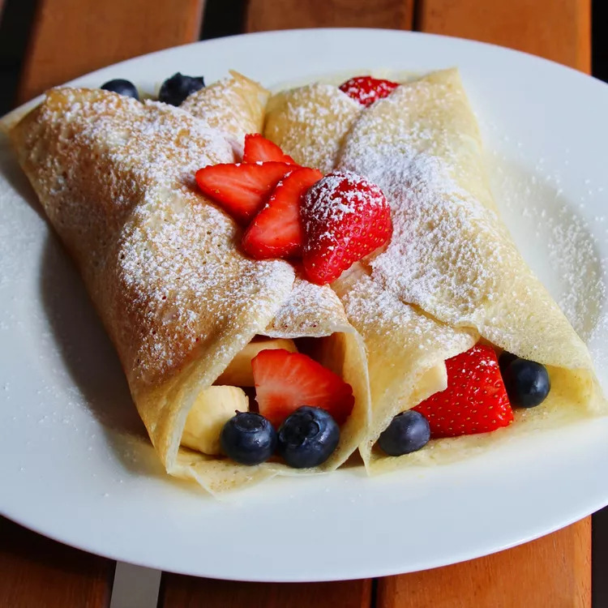

Dessert Crepes

This crepe recipe is essential for a fancy breakfast or eye-catching dessert.
Sprinkle warm crepes with sugar and lemon, or serve with whipped cream,
ice cream, and fruit.
- Prep Time: 10 mins
- Cook Time: 20 mins
- Total Time: 30 mins
- Servings: 8
- Yield: 8 crepes
Ingredients
- 4 eggs, lightly beaten
- 1 1/3 cups milk
- 1 cup all-purpose flour
- 2 tablespoons butter, melted
- 2 tablespoons white sugar
- 1/2 teaspoon salt
Directions
- Whisk together eggs, milk, flour, melted butter, sugar and salt in a large bowl
until smooth
- Heat a medium skillet or crepe pan over medium heat. Grease the pan with a
small amount of butter or oil applied with a brush or paper towel
- Using a serving spoon or small ladle, spoon about 3 tablespoons crepe batter
onto the hot pan, tilting the pan to evenly coat the bottom surface. Cook until
golden brown, 1 to 2 minutes per side; serve warm.
Nutrition Facts per serving
- 164 Calories
- 8g Fat
- 17g Carbs
- 6g Protein
Related Recipes